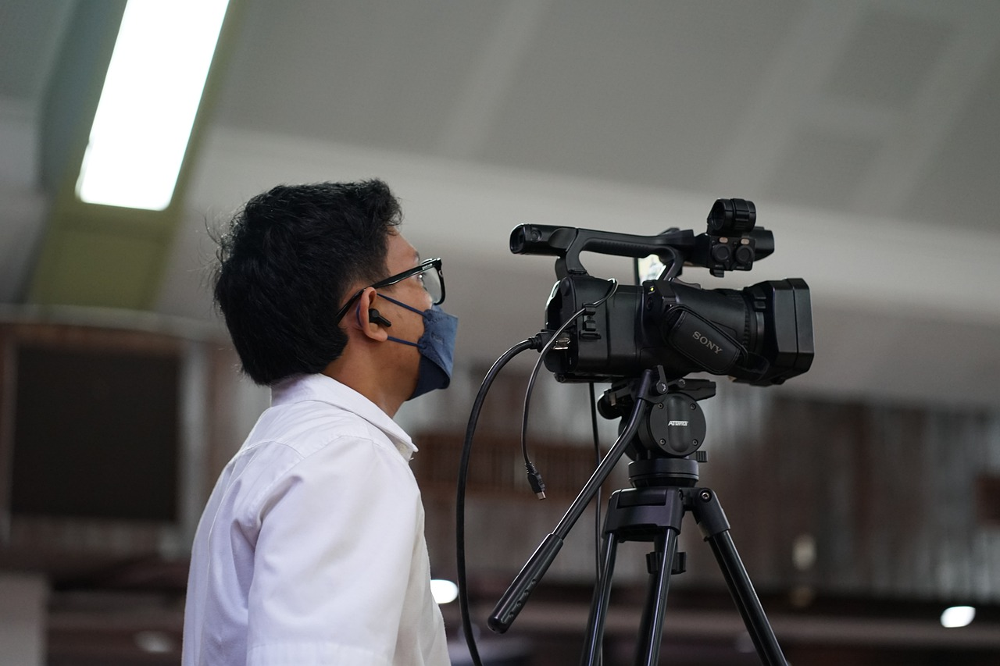
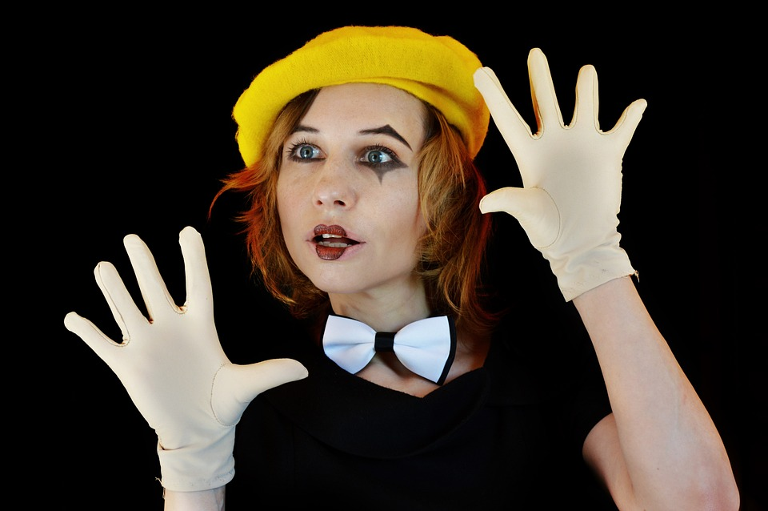

Osebje

Timsko delo
Pri produkciji je timsko delo izjemnega pomena, saj je lahko uspešna le, če celotna ekipa efektivno sodeluje in vsak član ekipe dobro opravi svoje naloge.
Producent
Producent vodi celotno produkcijo. On izbere scenarista in režiserja, s katerim nato poišče še drugo osebje, usklajuje delo, potrdi scenarij, se dogovarja z zunanjimi sodelavci. Prav tako je odgovoren za zagotovitev in uskladitev časovnih in materialnih potreb za snemanje. Pogosto ima poleg še asistente, ki mu pomagajo pri izvajanju vseh nalog.
Režiser

Režiser je član ekipe, ki mora imeti organizacijske in voditeljske sposobnosti, mora biti ustvarjalen, preudaren, hkrati pa strpen. Cilj dela režiserja je smiselna uskladitev vsebine in oblike, kreativna vizualizacija scenarija in nadzor ekipe in celotnega procesa video produkcije.
Tajnik in asistent režije
Tajnik in asistent režije sta leva in desna roka režiserja. Tajnik skrbi za administracijo, za beleženje in zapisovanje priprav na snemanje. Med produkcijo sedi poleg režiserja in mu pomaga z informacijami o začetku in koncu določenega nastopa, o premorih, obvešča ga o potrebni grafiki in drugih posebnostih na snemanju. Asistent pomaga pri zbiranju snovi, podatkov, skrbi za pokrivanje tehničnih in prostorskih potreb za snemanje in pomaga pri nadzorovanju ustreznosti izvedbe.
Vodja prizorišča
Vodja prizorišča je predstavnik režiserja na odru ali prizorišču. Odgovoren je za organizacijo dela na prizorišču, sceni, razporeja osebje, nastopajoče, skrbi za varnost in disciplino.
Mešalec slike
Mešalec slike sproti montira posnetke po napotkih režiserja. Preklaplja lahko tudi med drugimi viri videa, kot so vnaprej posnete vsebine, grafike, ki mu jih posreduje operater grafike. Le-ta neposredno sodeluje z režiserjem in skrbi za ustrezno implementacijo grafike na zaslon.
Operaterji počasnih posnetkov
Operaterji počasnih posnetkov nadzirajo in zbirajo počasne posnetke in jih po dogovoru z režiserjem dodajajo v video prenos.
Kamermani ali operaterji kamer
Kamermani ali operaterji kamer so v stalnem kontaktu z režiserjem, ki jim daje natančna navodila. Njihova naloga v predpripravi je namestitev in postavitev kamere ter potrebne dodatne opreme zanjo. Preveriti morajo tudi vse priključke in kable, delovanje povezav, prilagodijo nastavitve in opremo ustrezno zaščitijo pred zunanjimi vremenskimi vplivi, če se produkcija odvija na prostem. Pomembno je tudi, da poznajo tehnične lastnosti in imajo občutek za snemanje. Včasih kamermanu pomaga asistent kamere, ki kamere namesti, je odgovoren za kamermanovo varnost in pazi na kable, da se ne poškodujejo ali zapletejo.
Tehnični direktor
Tehnični direktor je zadolžen za tehnično plat produkcije. To je strokovnjak, ki pri pripravah svetuje uporabo potrebnih tehničnih sredstev, naroča in odobrava opremo, pri neposredni izvedbi pa išče hitrejše, boljše in cenejše rešitve.
Tonski mojster
Tonski mojster je mojster za zvok, skrbi pa za tehnično in umetniško ustreznost produkcije zvoka, torej govora, glasbe, posnetkov in raznih efektov. Narediti mora načrt za število, vrsto in postavitev mikrofonov na prizorišču. Nadzirati mora celotno postavitev, preveriti povezave in hkrati je odgovoren za končni zvočni miks, ki zajema jakost zvoka, balansiranje in tonsko kakovost zvoka.
Nastopajoči
Nastopajoči so na splošno ljudje, ki so videni in slišani pred kamero. To so lahko igralci, napovedovalci, gostje.
Mojster osvetljave
Mojster osvetljave je mojster za luč. V dogovoru z glavnim kamermanom in režijo, s programerjem osvetljave in drugimi pomočniki ustrezno osvetli prizorišče. Pristojen je za tehnično in umetniško oblikovanje, kontroliranje ter aranžiranje svetlobe in svetlobnih efektov. V osvetlitev se danes vlaga vedno več časa in sredstev, saj je ustrezna svetloba z dodanimi efekti pomemben del šova. Pri osvetljavi ne uporabljajo več le luči, uporabljajo še velike LED panele, laserje, projektorje in tudi holograme.